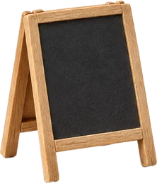
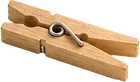
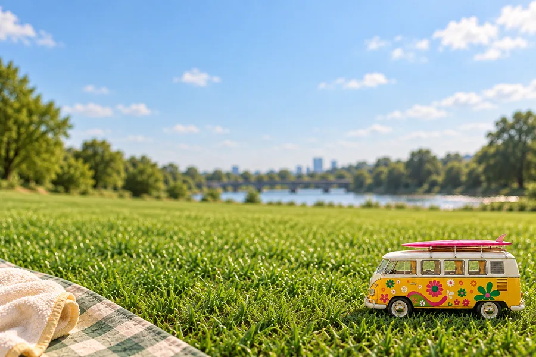
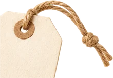

오늘의 잔디밭

10.3OPEN
모임 날, 여기가
우리 돗자리예요
당일 현장에서 찍은 사진을 올리고, 마음에 드는 사진에 한 표. 다음 순서 안내와 뒤풀이 조도 여기서 봐요.
- 10월 3일 1회 당일에 열려요
- 현장에서 알려드리는 행사 코드로 들어와요
- 사진은 올린 사람이 동의한 것만 같이 봐요
다가오는 모임
내 활동
불러오는 중…



PLATFORM01한강에 돗자리 펴고 맥주 한 잔. 어릴 때 하던 유치한 놀이를 다 커서 술 한 잔 들고 다시 합니다. 크게 모여서 그날 하루 실컷 놀고 헤어져요.
수건돌리기, 무궁화꽃이 피었습니다, 물총. 초등학교 운동장에서 하던 것들이에요. 그걸 어른이 되어 맥주 한 잔 들고 다시 하면 이상하게 더 재밌습니다.
잘하고 못하고가 없는 놀이만 골라요. 규칙이 세 줄을 넘지 않고, 늦게 합류해도 바로 낄 수 있는 것들이요.

10.3당일 현장에서 찍은 사진을 올리고, 마음에 드는 사진에 한 표. 다음 순서 안내와 뒤풀이 조도 여기서 봐요.
불러오는 중…